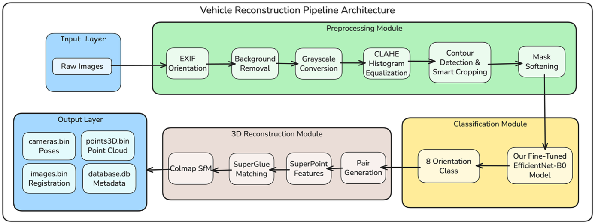

Three-dimensional (3D) reconstruction of vehicles remains a challenging task, particularly when aiming to generate standardized models from multiple samples of the same make, model, body type, and year. While traditional Structure-from-Motion approaches excel at reconstructing individual objects, they struggle to create generalized models from diverse multi-view datasets exhibiting variations in lighting, background, and appearance. This study presents a novel automated pipeline for standardized 3D vehicle reconstruction.
The proposed methodology employs a three-stage approach: (1) preprocessing with background removal and adaptive histogram equalization to isolate vehicle regions and normalize illumination; (2) deep learning-based orientation classification using an EfficientNet-B0 architecture to categorize images into eight directional views; and (3) sparse reconstruction via hierarchical localization and COLMAP with a neighbor-based image pairing strategy. Applied to a heterogeneous, multi-source collection, the pipeline successfully generated 3D Gaussian Splatting models for over a hundred distinct vehicle classes — one of the first publicly available datasets of vehicle-class-specific 3D Gaussian Splatting reconstructions derived from heterogeneous multi-source collections.

Background removal (rembg) + CLAHE to isolate the vehicle and normalize lighting.
EfficientNet-B0 classifies each image into one of eight directional views.
HLOC (SuperPoint + SuperGlue) + COLMAP with neighbor-based pairing, then 3DGS.
@article{uslu2026multistage,
title = {A Multi-Stage Pipeline for 3D Reconstruction of Vehicles from Heterogeneous Multi-View Images},
author = {Uslu, Muzaffer Arda and Kaplan Berkaya, Selcan},
journal = {Erciyes {\"U}niversitesi Fen Bilimleri Enstit{\"u}s{\"u} Fen Bilimleri Dergisi},
volume = {42},
number = {2},
year = {2026},
doi = {10.65520/erciyesfen.1918173}
}
@inproceedings{yang2015compcars,
title = {A Large-Scale Car Dataset for Fine-Grained Categorization and Verification},
author = {Yang, Linjie and Luo, Ping and Loy, Chen Change and Tang, Xiaoou},
booktitle = {IEEE Conference on Computer Vision and Pattern Recognition (CVPR)},
year = {2015}
}